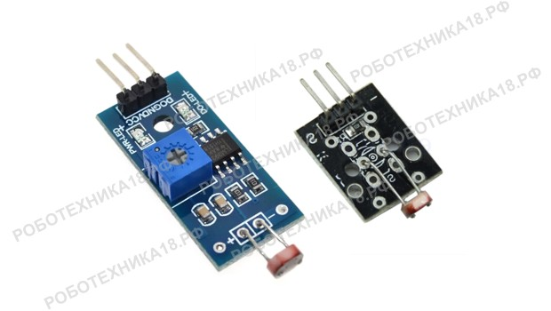
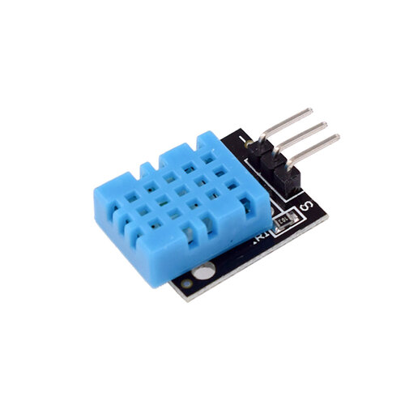
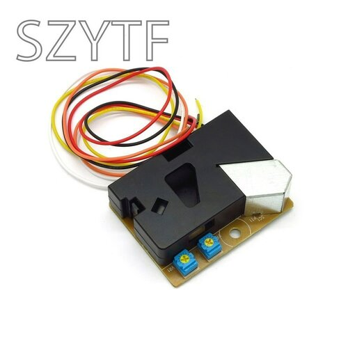
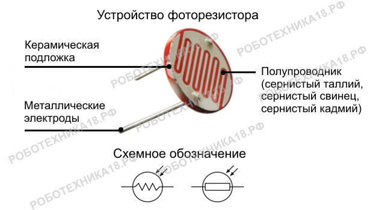
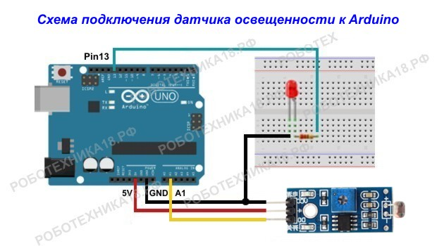

Как подключить датчик освещенности к Ардуино
aliexpress.ru

Электронный модуль для Arduino PCB DIY стартовый...

Датчик освещенности Ардуино позволяет сделать автоматическое включение освещения. Основой данного модуля является полупроводниковый элемент — фоторезистор. Рассмотрим, как правильно подключить датчик освещенности к плате Arduino и разберем две простые программы для использования цифрового и аналогового входа на микроконтроллере для управления светодиодом.
Характеристики модуля датчика освещенности
Датчик света может выпускаться в двух вариантах: с подстроечным резистором (цифровой датчик) и без него (аналоговый датчик). Оба варианта имеют три контакта для подключения к Arduino Nano или Uno. Два контакта служат для питания датчика — 5V и GND, а третий контакт — выдает аналоговый (обозначен буквой S) или цифровой сигнал (обозначен D0) и подключается к соответствующим портам платы Ардуино.Устройство фоторезистора, обозначение на электрических схемах
Модуль построен на базе обычного фоторезистора, поэтому если у вас нет в наличии датчика освещенности из стартового набора, то вы можете собрать простую схему делителя напряжения с фоторезистором и подключить ее к микроконтроллеру — подключение фоторезистора к Ардуино. Отличие в том, что вам необходимо будет повторить простую схему датчика, собрав ее самостоятельно на макетной плате.
Как подключить датчик освещенности к Ардуино
Для этого занятия потребуется:
На картинке представлена схема подключения датчика света к Arduino Uno с использованием аналогового сигнала. На модуль подается питание 5 Вольт, а в зависимости от освещенности в помещении на выходе модуля (S) меняется напряжение от 0 до 5 Вольт. При подаче этого сигнала на аналоговый вход, а Arduino преобразует сигнал при помощи АЦП в диапазон значений от 0 до 1023.
Счетч для аналогового датчика освещенности
void setup() {
pinMode(A1, INPUT);
analogWrite(A1, LOW);
Serial.begin(9600); // подключаем монитор порта
}
void loop() {
// считываем данные с датчика и выводим на монитор порта
int light = analogRead(A1);
Serial.print("Light = ");
Serial.println(light);
// рассчитываем напряжение и выводим на монитор порта
float u = light * 0.48 / 100;
Serial.print("U = ");
Serial.println(u);
// ставим паузу и делаем перенос строки
delay(500);
Serial.println("");
}
Пояснения к коду:
Схема подключения датчика освещенности к Ардуино
Следующая программа использует цифровой сигнал, идущий от датчика освещенности ky. На модуле имеется подстроечный резистор для настройки чувствительности. То есть вы можете отрегулировать, какой уровень освещенности необходим, чтобы модуль стал отправлять сигнал истина (логическая единица) на микроконтроллер Arduino. Подключите светодиод к пин 13 и загрузите следующий скетч.
Счетч для цифрового датчика освещенности
void setup() {
pinMode(13, OUTPUT);
pinMode(A1, INPUT);
}
void loop() {
// считываем данные с датчика и выводим на монитор порта
if (digitalRead(A1) == HIGH) {
digitalWrite (13, LOW);
}
if (digitalRead(A1) == LOW) {
digitalWrite (13, HIGH);
}
}
Пояснения к коду:
�